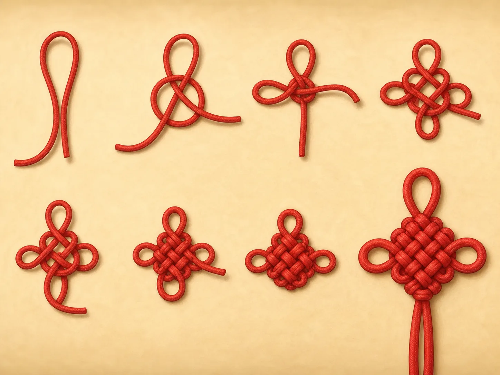
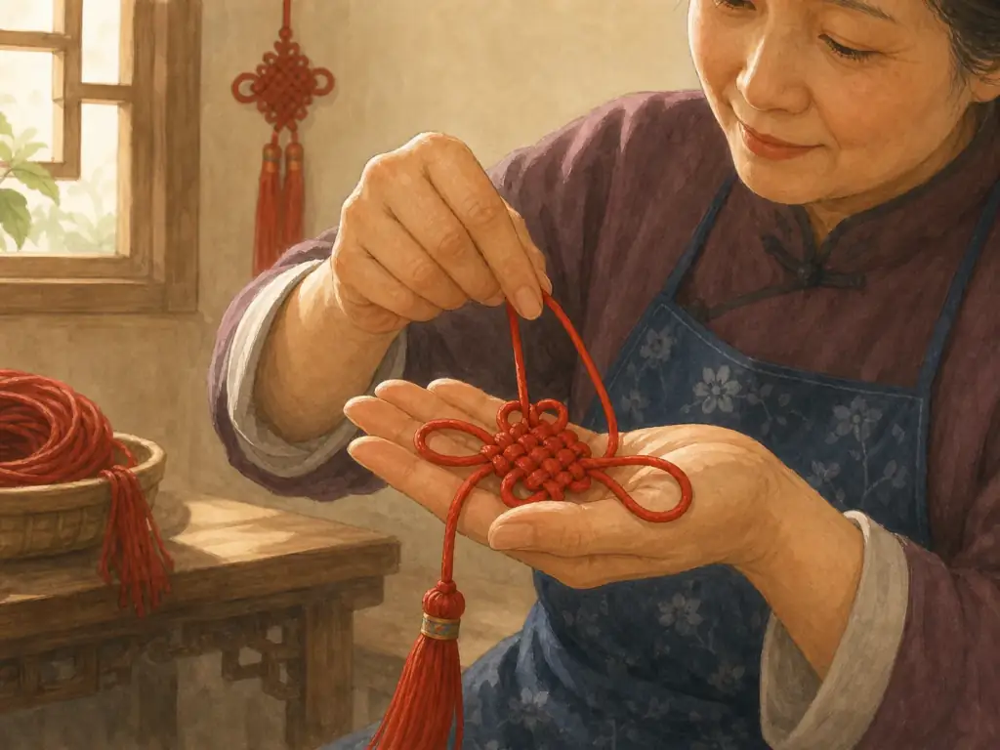
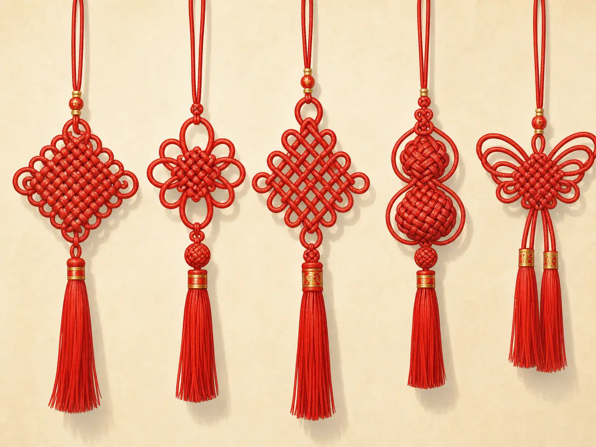
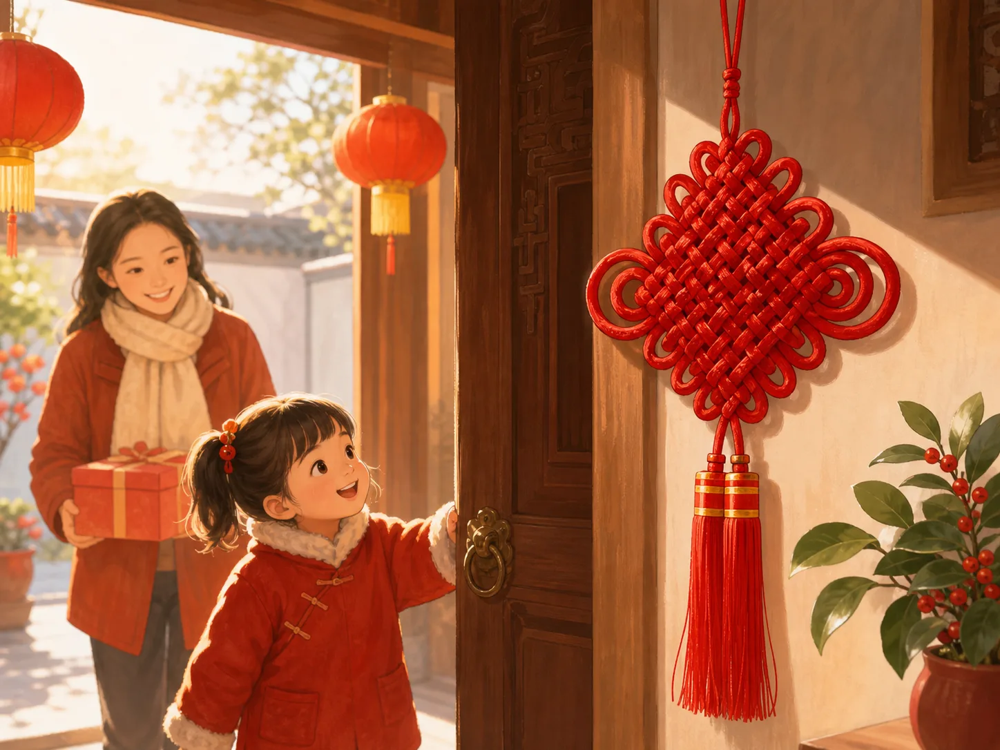

红红的中国结，满满的祝福
Red Chinese Knots, Full of Good Wishes
Page 1
一根绳子，变成一道谜题
One Cord, and a Puzzle

A red cord changes from loose loops into a complete Chinese knot.
拿起一个Zhōngguó jié · 用一根或多根绳子编成的装饰结。，我们先玩一个小游戏：找一找，这根绳子从哪里开始？找到了吗？那它又在哪里结束？这下就没那么容易了。
很多传统中国结，常常用一根连续的绳子编成。绳子向左绕，向右转，从上面跨过去，再从下面钻回来，一圈又一圈。等到整个结编好，图案变得整整齐齐，绳子的开头和结尾反而像藏起来了。刚才还只是一根普普通通的绳子，转眼就变成一朵红花、一座小迷宫，或者一个怎么看都走不到尽头的图案。
这就是中国结第一个有意思的地方。更有意思的是：这个结还可能“会说话”。
Pick up a Zhōngguó jié · 中国结 · A decorative knot made by looping and tightening cord into a balanced pattern. and try a small challenge: find where the cord begins. Easy? Now find where it ends. Not so easy.
Many traditional Chinese knots are made from one continuous cord. The cord loops left, turns right, crosses over itself, slips underneath, and comes back again. When the knot is finished, the pattern can look so even and complete that the beginning and end seem to disappear. A plain piece of cord has somehow turned into a red flower, a little maze, or a pattern with no obvious way out.
That is the first surprise of a Chinese knot. The second surprise is that the knot may be saying something.
Page 2
先别急着拉紧！
Don’t Pull Yet!

A knot maker adjusts the red cord and loops in her hands.
看一个熟练的人编中国结，有点像看一道谜题自己慢慢找到答案。刚开始，桌上的绳子一点也不好看。它松松地摊着，东一个圈，西一个圈。编结的人把这个圈压到那个圈上，让绳子从上面穿过去，再从下面绕回来。编到一半时，看起来甚至比刚才更乱。
可是这时候千万不能一把拉紧。拉错一边，旁边的圈就会变小；用力太大，整个图案可能歪掉。编结的人要一点一点调整：这里松一点，那里拉一点，再把左右两边慢慢整理得一样大。
最后，那团看起来乱糟糟的绳子，忽然变得又整齐又对称。所以，编中国结可不只是“把绳子打个结”。绳子很简单，真正难的是知道每一段该往哪里走，还要有耐心把它们慢慢送到正确的位置。
Watching someone make a Chinese knot can feel a little like watching a puzzle solve itself. At first, the cord does not look impressive at all. It lies in loose loops on a table. The maker bends one loop across another, passes the cord over, then under, then through. For a while, the whole thing may look more tangled than beautiful.
And here is the tricky part: you cannot simply yank everything tight. The loops have to be arranged carefully. One pull changes another part of the knot. Tug too hard in the wrong place, and the pattern may shrink or twist. So the maker adjusts one loop, then another, slowly bringing the shape into balance.
Only at the end does the loose tangle become something neat and symmetrical. That is why knotting is a hand skill, not just “tying a string.” The cord is simple. Knowing where every part should go takes practice.
Page 3
绳结也能帮人“记事”吗？
Could a Knot Remember Something?
在没有笔记本、没有手机的很久以前，人们怎么提醒自己别忘记重要的事情？中国古书里有“结绳而治”的记载。后来的解释还说，大事可以打一个大结，小事可以打一个小结。
想象一下：你看到绳子上的那个大结，突然想起来——“糟了，这件事可不能忘！”当然，古代用来记事的绳结，和今天挂在家里的装饰中国结，并不能简单地说就是同一种东西一路传下来的。它们属于不同的时代，也有不同的用途。
可是这个古老的说法告诉我们一件很有意思的事：绳结不只是把东西绑住，它还可以装进人的意思。后来，装饰性的绳结越来越擅长做这件事。
Long before people carried notebooks or phones, how did they remember something important? One old Chinese text says that people in very ancient times once used tied cords. A later explanation describes a curious system: a big matter could be marked with a big knot, a small matter with a small knot.
Imagine looking at a cord and thinking, “Oh! That big knot—I must not forget that.” We cannot draw a straight line from those ancient record-keeping knots to the decorative Chinese knots hanging in homes today. They belonged to different times and uses.
Still, the old story gives us a wonderful idea: a knot does not have to be only a way to hold two things together. It can also carry meaning. And that is exactly what decorative knots later became very good at doing.
Page 4
一个结，就是一句祝福
A Knot Can Be a Wish

Five red Chinese knots show different shapes and patterns.
慢慢地，绳结的花样越来越多，也有了不同的名字和寓意。盘长结一圈套着一圈，看起来没有明显的开头和结尾，所以常让人想到长久。如意结的名字里，就带着“称心如意”的好愿望。同心结则让人想到两颗心在一起，常常用来表达亲近和相守。
光听名字，就像听见了一句句小小的吉祥话。中国结有趣的地方也正在这里。你不需要在绳子上写：“祝你平安幸福，事事顺利。”结的名字和形状，本身就可以帮你把心意送出去。
红色又特别常见，因为在中国文化里，红色常常和喜庆、欢乐、好运连在一起。于是，一根红绳编成的结，看起来不只漂亮，还很像一份没有写在纸上的祝福。
Over time, decorative knotting became more elaborate. Different knots gained different names, shapes, and meanings. The páncháng jié loops around and around in a pattern that seems to continue without an end, so it can suggest something lasting. A rúyì jié carries the idea of things going as you wish. A tóngxīn jié—“united hearts”—can express closeness and togetherness.
Even the names sound like tiny good wishes. That is part of the fun of Chinese knots. You do not need to write “I wish you happiness and good luck” across the cord. The shape itself can help carry the message.
Red became an especially popular color for these decorations because red is strongly connected with happiness, celebration, and good fortune in Chinese culture. So a knot could be beautiful and useful in another way: it could help someone give a wish without saying very much at all.
Page 5
红绳今天还在“说话”
The Red Cord Is Still Talking

A child looks up at a red Chinese knot hanging beside a doorway.
今天，中国结并没有只待在博物馆里。过节的时候，你可能在门边看见它；礼物上可能系着它；商店、房间里可能挂着它；有时候，车里、书包上也能找到一个小小的中国结。有的很大，花样复杂；有的只有手掌那么小。
可是它们做的事情，还是很简单。有人拿起一根绳子。绕过去，穿回来；从上面走，再从下面钻过。手指耐心地把一个个绳圈拉到合适的位置，慢慢地，一个图案出现了。然后，这个结被送到另一个人手里。
它也许在说：“愿你平平安安。”也许在说：“愿美好的日子长长久久。”也许只是说：“我想着你呢。”这么多话，居然都能藏进一根绳子里。难怪中国结的开头和结尾总是那么难找。也许，祝福本来就不应该有尽头。
Today, Chinese knots have not disappeared into museums. You may see them beside a door during a festival, attached to a gift, hanging in a shop, decorating a room, or even inside a car. Some are large and complicated. Others are small enough to hang from a bag.
Their jobs have changed over time, but one thing has stayed wonderfully simple. Someone takes a cord. The cord passes over and under, around and through. Patient hands pull the loops into place. Slowly, a pattern appears. Then the finished knot goes to someone else.
Perhaps it says, “Be safe.” Perhaps, “May good things last.” Perhaps simply, “I’m thinking of you.” All of that—from one piece of cord. No wonder it is hard to find where the knot begins and ends. Maybe the wish is not supposed to end either.